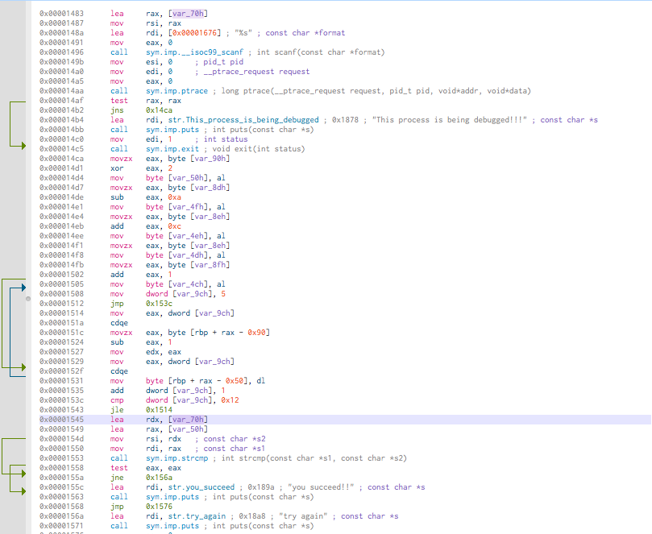

mara's blog
mara mara@localhost.local
Presentation
Welcome, I'm mara, during my spare time, I'm contributing to develop intros/demos for the Flush group. You can find some Flush information on the offical website or on demozoo or pouet and our youtube channel
Crackmes.one's solutions
- Solution for destructeur’s ShAPK1
- Solution for nutcake’s WhiteRabbit
- Solution for zed-zahir's ZED-Crackme
- Solution for BitFriends's nasm crack
Solution for destructeur's ShAPK1
mara mara@localhost.local
Analysis
The program is an apk file, so probably an Android program. We used jad1, to analyze the binary.
Three classes are present :
- BuildConfig
- MainActivity
- R
The MainActivity classe is insteresting for us. It contains, three methods :
- onCreate
- encrypt
- check
onCreate called by the Android runtime to create the GUI controls, encrypt and check are used by the application logic.
The check aims to validate if the code entered are correct or not.
public void check() {
Button button = (Button) findViewById(R.id.check);
this.checkButton = button;
button.setOnClickListener(new View.OnClickListener() {
public void onClick(View view) {
TextView textView = (TextView) MainActivity.this.findViewById(R.id.messageText);
String obj = ((EditText) MainActivity.this.findViewById(R.id.passwordInput)).getText().toString();
if (Arrays.equals(Base64.encode(MainActivity.this.encrypt(obj.getBytes(StandardCharsets.UTF_8)), 2), MainActivity.this.getResources().getString(R.string.secret).getBytes(StandardCharsets.UTF_8))) {
textView.setText("YES! PASSWORD IS CORRECT!!");
} else {
textView.setText("PASSWORD IS WRONG!!");
}
}
});
}
This line is interesing :
if (Arrays.equals(Base64.encode(MainActivity.this.encrypt(obj.getBytes(StandardCharsets.UTF_8)), 2), MainActivity.this.getResources().getString(R.string.secret).getBytes(StandardCharsets.UTF_8))) {
To validate the challenge, we need to have a code which equals to R.string.secrets. R.string.secrets is a string located in Resource : Resources->resource.arsc->string.xml. It's value is :
<string name="secret">NQALCgEDDDEzUjpTBwocBgcDPTIIGwIK</string>
The conditional test use the encrypt function to encode the code entered before compare it with the right hardcoded code.
public byte[] encrypt(byte[] bArr) {
byte[] bytes = getResources().getString(R.string.key).getBytes(StandardCharsets.UTF_8);
int length = bytes.length;
byte[] bArr2 = new byte[bArr.length];
for (int i = 0; i < bArr.length; i++) {
bArr2[i] = (byte) (bArr[i] ^ bytes[i % length]);
}
return bArr2;
}
The function encrypt take a parameter, our code entered, the bytes array is a key pointed by R.string.key and available in Resources->resource.arsc->string.xml.
It's value is :
<string name="key">beginning</string>
The encrypt function xored each characters of bArr with bArr2 for each iterations.
WARNING: the
bArr2can be short thanbArrso a modulo with the key length (bArr2) is applied to avoid the bound array overflow
Keygen
You will find an unencrypt script in python language to find the original code :
#!/usr/bin/env python3
# -*- encoding: utf-8 -*-
import base64
BEGINNING = "beginning"
SERIAL = "NQALCgEDDDEzUjpTBwocBgcDPTIIGwIK"
serial_b64decoded = base64.b64decode(SERIAL)
serial_b64decoded_length = len(serial_b64decoded)
beginning_length = len(BEGINNING)
original_serial = ""
for i in range(serial_b64decoded_length):
xored_value = (serial_b64decoded[i] ^
ord(BEGINNING[i % beginning_length]))
original_serial += chr(xored_value)
# the original code
print(original_serial)
https://github.com/skylot/jadx/
Solution for nutcake's WhiteRabbit
mara mara@localhost.local
Analysis
The description suggest a hidden function...
Take IDA 7 Freeware 1, to analyze the binary.
Type CTRL+E keys and go to _start function, you will see the startup stub
which trigger the main function.
The main function printing only two uninteresting string.
If you press another time the CTRL+E keys, you will see a function named
secret. This function print a flag but it haven't got any cross references.
How we can go to the secret's function ?
The first idea will be to patch the EntryPoint but the program will crashed.
Another option will to patch the instruction lea rdi, main to lea rdi, secret in
the _start function.
WARNING: Beware the nmemonic is position relative.
public _start
_start proc near
xor ebp, ebp
mov r9, rdx ; rtld_fini
pop rsi ; argc
mov rdx, rsp ; ubp_av
and rsp, 0FFFFFFFFFFFFFFF0h
push rax
push rsp ; stack_end
lea r8, __libc_csu_fini ; fini
lea rcx, __libc_csu_init ; init
lea rdi, main ; main <--------- here
call cs:__libc_start_main_ptr
hlt
_start endp
Pick the hexadecimal values of the lea : 0x48, 0x8D, 0x3D, 0x51, 0x01, 0x00, 0x00 .
Often in the 64 bits programming the address are relative. To verify this argue, we help us of the online encoder/decoder of Jonathan Salwan's website.2
Copy the previous hexadecimal values without the 0x and comma in this website, select x86(64) in little endian mode and click on the disassemble button. The result will be :
0x0000000000000000: lea rdi, qword ptr [rip + 0x151]
Why it's 0x151 ? It's quite simple, look the next formula :
address of the main function - address of the lea - size of the instuction of
the lea opcode
0x11D5 - 0x107D - 7 => 0x151
TIP: we can type this previous operation at the left of IDC at the bottom of IDA window, to compute the operation.
Our goal will change the value by the correct position , the position of secret function. The formula :
address of the secret function - address of the lea - size of the instuction of
the lea opcode
0x1145 - 0x107D - 7 => 0xC1
Now, via the Jonathan's website 2, you filling out the form with :
0x0000000000000000: lea rdi, qword ptr [rip + 0xc1]
Select x86(64) in little endian mode and click on the assemble button. The result will be :
488D3D51010000
Fire up a hexadecimal editor and replace the old values by the new one :
48 8D 3D 51 01 00 00
by
48 8D 3D C1 00 00 00
Now, you can run the program and grab the flag !
Content in this archive
- hidden.i64 : the hidden analysis
- hidden_mod : the hidden file patched
- hidden_mod.i64 : the hidden_mod analysis
- solution.html : the present file.
https://www.hex-rays.com/products/ida/support/download_freeware.shtml
http://shell-storm.org/online/Online-Assembler-and-Disassembler/
Solution for zed-zahir's ZED-Crackme
mara mara@localhost.local
Analysis
Before all, unpack the binary via upx1.
$ upx -d ZED-Crackme-x64.bin
The goal will find the good serial.
Take Cutter2, to analyze the binary.
Don't forget, use aaa option to disassemble the crackme.
The entry point with Cutter is named by a flag entry0
NOTE: a flag is a litteral or a identifier in a Cutter jargon
;-- section..text:
;-- .text:
;-- _start:
42: entry0 (int64_t arg3);
; arg int64_t arg3 @ rdx
0x000008c0 xor ebp, ebp ; [14] -r-x section size 3410 named .text
0x000008c2 mov r9, rdx ; arg3
0x000008c5 pop rsi
0x000008c6 mov rdx, rsp
0x000008c9 and rsp, 0xfffffffffffffff0
0x000008cd push rax
0x000008ce push rsp
0x000008cf lea r8, [sym.__libc_csu_fini] ; 0x1610
0x000008d6 lea rcx, [sym.__libc_csu_init] ; 0x15a0 ; "AWAVI\x89\xd7AUATL\x8d%\xae\a "
0x000008dd lea rdi, [main] ; sym.main
; 0x1343
0x000008e4 call qword [reloc.__libc_start_main] ; 0x201fe0
It's the classical startup sequence for a Linux program.
Look the assembly at sym.main :
int main (int argc, char **argv, char **envp);
; var int64_t var_b0h @ rbp-0xb0
; var int64_t var_a4h @ rbp-0xa4
; var int64_t var_9ch @ rbp-0x9c
; var int64_t var_91h @ rbp-0x91
; var int64_t var_90h @ rbp-0x90
; var int64_t var_8fh @ rbp-0x8f
; var int64_t var_8eh @ rbp-0x8e
; var int64_t var_8dh @ rbp-0x8d
; var int64_t var_88h @ rbp-0x88
; var int64_t var_80h @ rbp-0x80
; var int64_t var_7eh @ rbp-0x7e
; var int64_t var_70h @ rbp-0x70
; var int64_t var_50h @ rbp-0x50
; var int64_t var_4fh @ rbp-0x4f
; var int64_t var_4eh @ rbp-0x4e
; var int64_t var_4dh @ rbp-0x4d
; var int64_t var_4ch @ rbp-0x4c
; var int64_t var_30h @ rbp-0x30
; var int64_t var_28h @ rbp-0x28
; var int64_t var_20h @ rbp-0x20
; var int64_t var_18h @ rbp-0x18
; var int64_t var_10h @ rbp-0x10
; var int64_t var_eh @ rbp-0xe
; var int64_t var_8h @ rbp-0x8
; arg int argc @ rdi
; arg char **argv @ rsi
0x00001343 push rbp
0x00001344 mov rbp, rsp
0x00001347 sub rsp, 0xb0
0x0000134e mov dword [var_a4h], edi ; argc
0x00001354 mov qword [var_b0h], rsi ; argv
0x0000135b mov rax, qword fs:[0x28]
0x00001364 mov qword [var_8h], rax
0x00001368 xor eax, eax
0x0000136a lea rdi, str. ; 0x17dd ; "***********************" ; const char *s
0x00001371 call sym.imp.puts ; int puts(const char *s)
0x00001376 lea rdi, str.rules: ; 0x17f5 ; "** rules: **" ; const char *s
0x0000137d call sym.imp.puts ; int puts(const char *s)
0x00001382 lea rdi, str. ; 0x17dd ; "***********************" ; const char *s
0x00001389 call sym.imp.puts ; int puts(const char *s)
0x0000138e mov edi, 0xa ; int c
0x00001393 call sym.imp.putchar ; int putchar(int c)
0x00001398 lea rdi, str.do_not_bruteforce ; 0x180d ; "* do not bruteforce" ; const char *s
0x0000139f call sym.imp.puts ; int puts(const char *s)
0x000013a4 lea rdi, str.do_not_patch__find_instead_the_serial. ; 0x1828 ; "* do not patch, find instead the serial." ; const char *s
0x000013ab call sym.imp.puts ; int puts(const char *s)
0x000013b0 mov edi, 0xa ; int c
0x000013b5 call sym.imp.putchar ; int putchar(int c)
Here, zed-zahir print the crackme banner, but later in the code some interesting stuff will be discovered.
0x000013fc sidt [rbp - 0x96]
0x00001403 movzx eax, byte [var_91h]
0x0000140a cmp al, 0xff
0x0000140c jne 0x1424
0x0000140e lea rdi, str.VMware_detected ; 0x1851 ; "VMware detected" ; const char *s
0x00001415 call sym.imp.puts ; int puts(const char *s)
0x0000141a mov edi, 1 ; int status
0x0000141f call sym.imp.exit ; void exit(int status)
The first one is an anti vmware by sidt nmemonic... well-known unless if I mistaken red-pill3 . Another interesting article that threat about of protection ultimate-anti-reversing4.
0x0000149b mov esi, 0 ; pid_t pid
0x000014a0 mov edi, 0 ; __ptrace_request request
0x000014a5 mov eax, 0
0x000014aa call sym.imp.ptrace ; long ptrace(__ptrace_request request, pid_t pid, void*addr, void*data)
0x000014af test rax, rax
0x000014b2 jns 0x14ca
0x000014b4 lea rdi, str.This_process_is_being_debugged ; 0x1878 ; "This process is being debugged!!!" ; const char *s
0x000014bb call sym.imp.puts ; int puts(const char *s)
0x000014c0 mov edi, 1 ; int status
0x000014c5 call sym.imp.exit ; void exit(int status)
Voila, the second one detect if an debugger is attached via ptrace function.
0x00001545 lea rdx, [var_70h]
0x00001549 lea rax, [var_50h]
0x0000154d mov rsi, rdx ; const char *s2
0x00001550 mov rdi, rax ; const char *s1
0x00001553 call sym.imp.strcmp ; int strcmp(const char *s1, const char *s2)
0x00001558 test eax, eax
0x0000155a jne 0x156a
0x0000155c lea rdi, str.you_succeed ; 0x189a ; "you succeed!!" ; const char *s
0x00001563 call sym.imp.puts ; int puts(const char *s)
0x00001568 jmp 0x1576
0x0000156a lea rdi, str.try_again ; 0x18a8 ; "try again" ; const char *s
0x00001571 call sym.imp.puts ; int puts(const char *s)
0x00001576 mov eax, 0
The strcmp compare two values from [var_70h] and [var_50h].
Cutter is able to highlight the values usage. Here, click on the value [var_70h].

[var_70h] seems used twice at 0x00001545 and 0x00001483 directly.
At 0x00001483, [var_70h] moved in rax then rsi.
To conclude, the strcmp
function take the contents without alteration.
[var_70h] is the user value.
So [var_50h], by deduction is the correct value to find.
I don't want trace the code step by step. The first strategy will use the Cutter code emulation. But the quick and the good strategy will be to inspect the content of [var_70h] and [var_50h] via LD_PRELOAD tricks.
int strcmp(const char *s, const char *s2) {
printf("s1 %s\ns2 %s", s, s2);
return 0;
}
The idea behind LD_PRELOAD tricks is hooking the real function by our library.
strcmp hooked but before, the c code must be compiled. Here, the program is m.c
$ gcc -shared -fPIC m.c -o m.so
To inject m.so at the execution of ZED Crackme, type the following command :
$ LD_PRELOAD=./m.so ./ZED-Crackme-x64.bin
Enter a dummy password okokok.
***********************
** rules: **
***********************
* do not bruteforce
* do not patch, find instead the serial.
enter the passphrase: s1 C(uiICD@CADDEBNEEDD
s2 okokokyou succeed!!
The password printed. It's C(uiICD@CADDEBNEEDD Now, you can run the program and check the flag !
***********************
** rules: **
***********************
* do not bruteforce
* do not patch, find instead the serial.
enter the passphrase: you succeed!!
Great !
https://upx.github.io
https://cutter.re
https://www.lions.odu.edu/~c1wang/course/cs495/lecture/10_2_Anti-VM_Techniques.pdf
https://anti-reversing.com/Downloads/Anti-Reversing/The_Ultimate_Anti-Reversing_Reference.pdf
Solution for BitFriends' nasm crack
mara mara@localhost.local
Analysis
The goal will find the "correct" message and it's a 64 bits program..
Take radare21, to analyze the binary.
NOTE: please use the git version of radare2 to be up to date
$ r2 nasm_crack
-- git blind --hard
[0x00401028]>
Don't forget, use aaa option to disassemble the crackme.
The entry point with Cutter is named by a flag entry0
NOTE: a flag is a litteral or a identifier in a radare jargon
[0x00401028]> aaa
[x] Analyze all flags starting with sym. and entry0 (aa)
[x] Analyze function calls (aac)
[x] Analyze len bytes of instructions for references (aar)
[x] Check for objc references
[x] Check for vtables
[x] Type matching analysis for all functions (aaft)
[x] Propagate noreturn information
[x] Use -AA or aaaa to perform additional experimental analysis.
[0x00401028]>
To navigate efficiently in the code, we can use Vp command.
[0x00401028]> Vp
TIP: we can navigate with
arrowkeys orh,j,k,lkeys like in VIM text editor.

According to linux-x64-syscall-table2, the code between 0x401028 and 0x401041, print the message "Enter your password: ".
Add a comment at 0x401041, by pressing ; key an validate it by enter/return key.

The code between 0x401043 and 0x40105c, grab the user entry.
The user entry string will be a length of 16 characters.

The code between 0x40105e and 0x401077 compare the content of address pointed by rsi and rdi until ecx will be equals to zero or a characters is different during the loop iteration. If all characters are equals the je nmemonic at 0x401079 will be taken.

To jump, on this line, press enter/return key to jump at loc.correct_fun

TIP: to return before the jump press the
ukey.
Great, if so the answer is the value pointed by rdi, so loc.passwd.
The right value is supersecret.
https://rada.re
https://blog.rchapman.org/posts/Linux_System_Call_Table_for_x86_64/